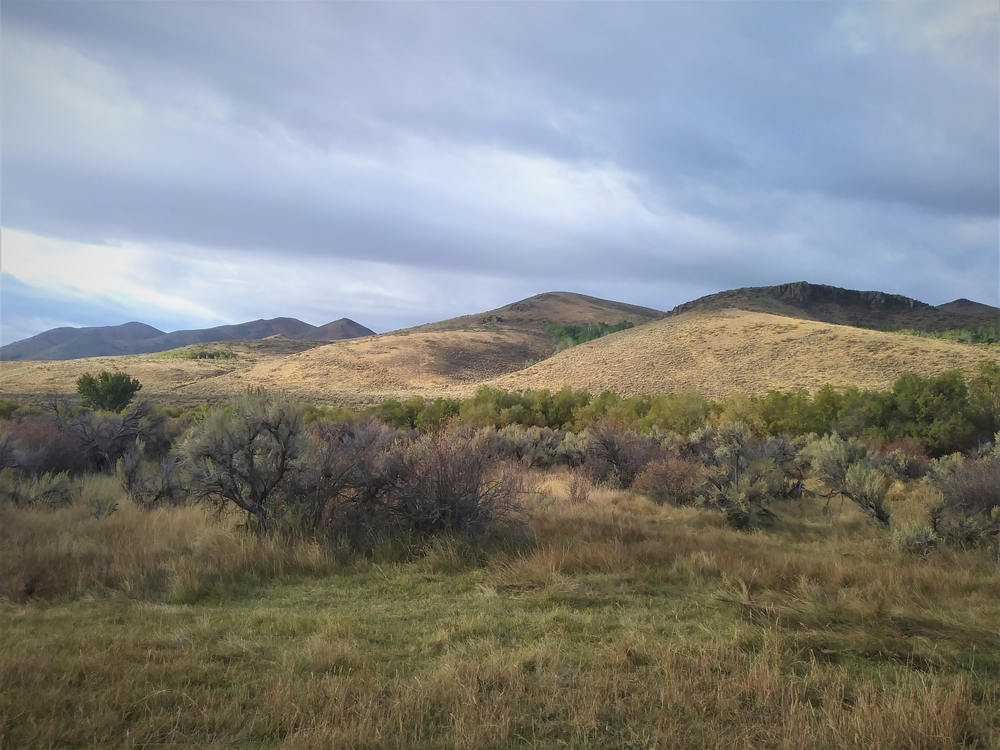
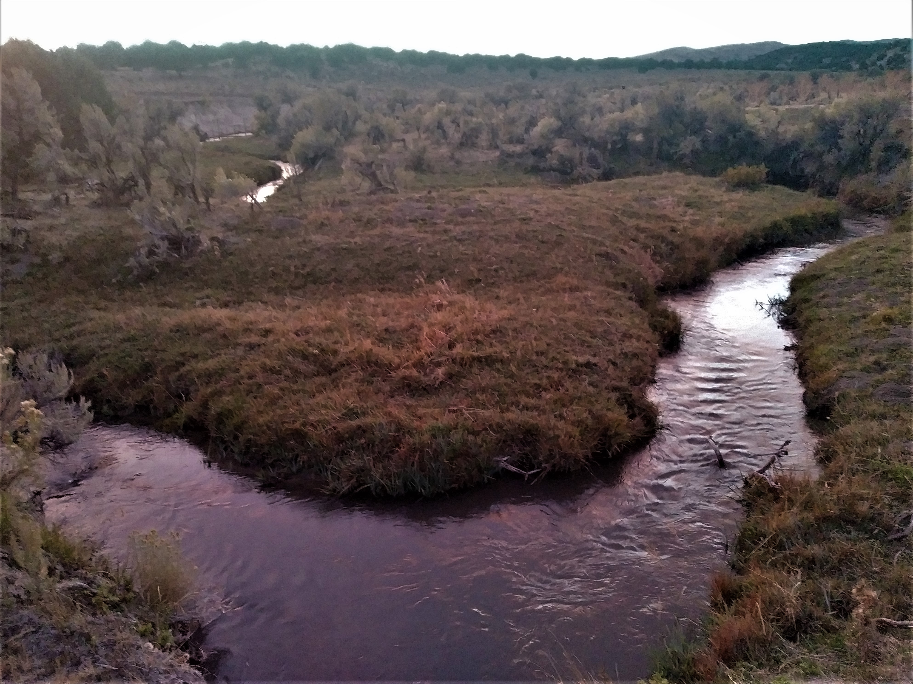
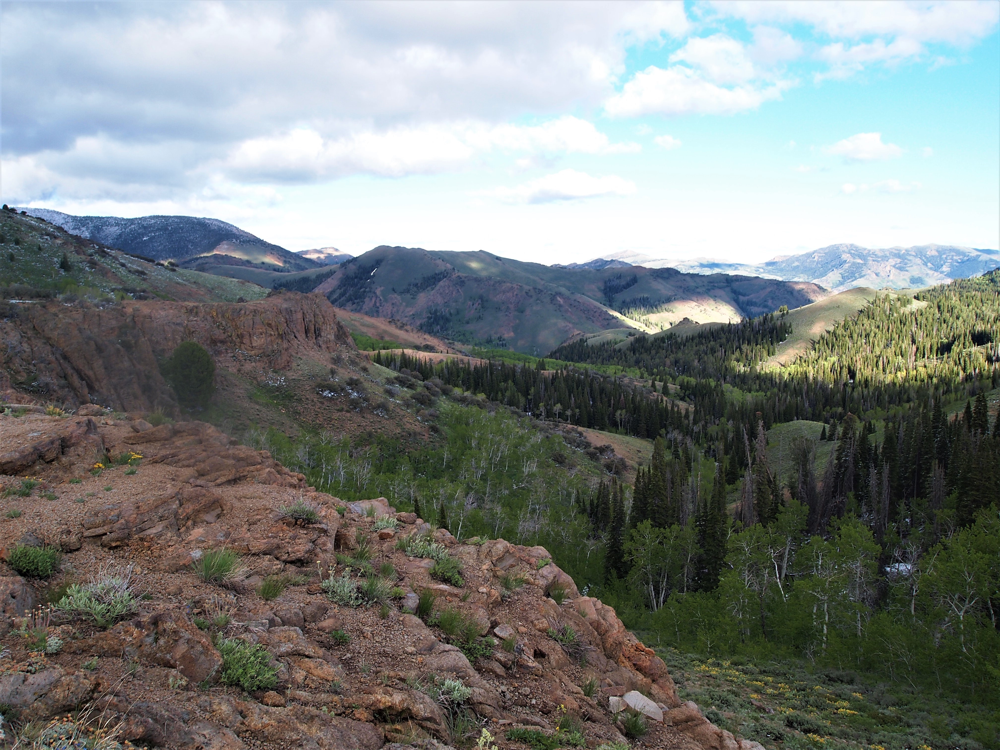
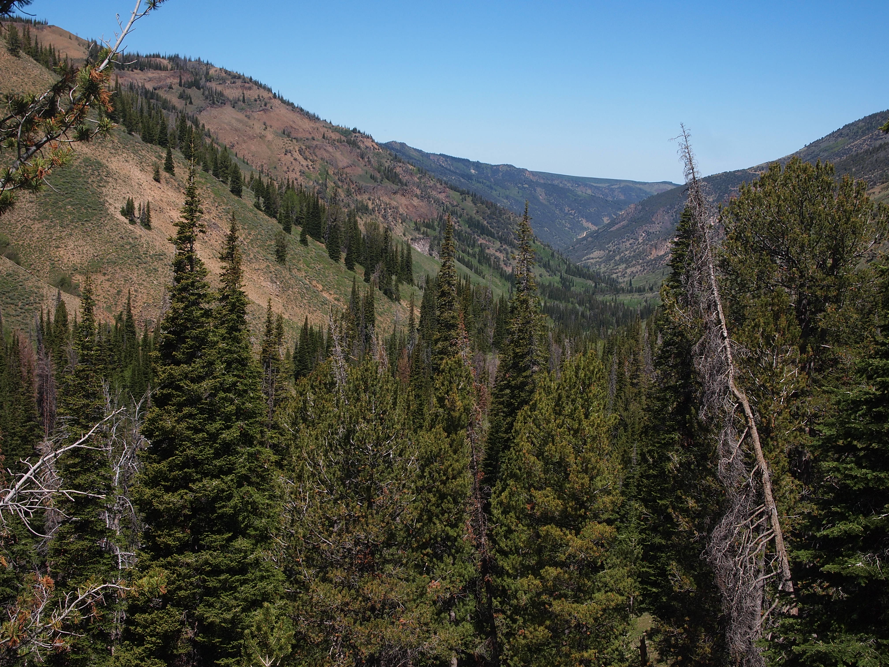

Nevada Native Fish-Slam
I have completed two slams and am working on two more. I debate whether the Wyoming or Utah slam is easier to complete, but I am absolutely certain about which one is the most difficult. Nevada has it all–long driving distances, small, brushy creeks, difficult to find and catch fish, and unlike Utah and Wyoming which require catching four fish, Nevada has six(!) in its slam. I have not completed the Nevada slam, and according to their angler recognition program, fewer than 30 people have ever completed it in the ten years or so it’s been around. I have caught three of the six, and it is just very, very difficult. But in my mind, this also makes it the most interesting and impressive!
Of the three fish I’ve caught, the first took me almost a full day and a half of fishing in the middle of nowhere, the second felt like an absolute miracle, and third required a backpack into the mountains to get to the fish. Nevada also refers to their contest as a “fish slam” rather than a “trout slam” because two of the fish are not trout. Bull trout is characterized as a char, while mountain whitefish is a different kind of salmonid. I admittedly don’t understand enough about fish biology to know the differences between these species.
At the time I started my slam, Nevada provided significantly less information on waters to find native fish than either Wyoming or Utah. They have since improved, but in 2019 it was literally a typed list of waters. I had to sort of cross-reference the list with accessible waters, what they looked like, how fishable they were likely to be, and what access was like. I was concerned about high levels of brush and impassable roads. One resource I have found to be helpful is Nevada’s annual Trophy Fish book, which can be found via the webpage here. The book lists people who have completed the slam each year and, importantly, where they caught their fish. Though the book changes every year, I was able to access old copies by editing the url. I used the waters frequently mentioned in the book to target my search.
Bonneville Cutthroat–Hendry’s Creek
As with my two previous slams, the Bonneville was the first fish I caught in Nevada. The fish exists in a few isolated mountain streams on the east side of the state, and while it wasn’t a short drive for me to get to the Great Basin National Park area, this was about the closest, easily catcheable fish. The Yellowstone is closer to me, but I hadn’t figured out how I was going to catch it yet. I also happened to be camping in central Utah, so I decided to make a one night detour out to Nevada.
The mountains in Nevada are unique because they tend to be long, narrow and rise steeply up from the Great Basin. Nevada is the dryest state in the country due to rain-shadowing from the Sierra Nevada, but it’s amazing how quickly the scenery can change with a little elevation. Utah is not too different, but the mountains tend to be a little bigger and a little wider, not giving the same overall feeling that Nevada mountains do of being “sky islands”. The Great Basin, especially in the northern part of the state, looks unlike almost anywhere else I’ve been in the world.
The amazing thing to me about the Bonneville trout in Nevada is that the streams disappear into the desert when they come out of the mountains. The fish traveled up these creeks as Lake Bonneville shrunk, then disappeared, and they’ve been there ever since, living in just a few miles of tiny creeks.
Hendry’s Creek is perhaps the easiest creek to access to catch the Bonneville as its accessible by a mostly okay forest road with dispersed camping nearby. One may also fish the creeks in the national park itself, but I’d been to Great Basin before and didn’t want to pay the entrance fee, and worry about finding a campsite. Some of the best target waters in the park had burned recently as well. It also seemed like Hendry’s Creek was almost a sure thing. One of the reports I read online suggested the guy rolled up to the creek, got out of his truck, caught his fish and left. I did not have the same success.
There is an obvious parking area at the end of the forest road very near the creek. The forest road itself is barely passable with a high-clearance two wheel drive vehicle. The creek near the parking area is small, but not particularly brushy and made for relatively easy casting. Unfortunately, there was no evidence fish existed in the creek. I didn’t bring a fish up, didn’t see a fish, and certainly didn’t hook a fish. I walked upstream, as I always do, and had no success. My original plan was to catch the fish and drive home, but it became clear that I’d have to stay another night. I found one of the dispersed campsites and setup there, with one another site just below me also taken, though I don’t think the area sees a lot of traffic.
Start of the trail up Hendry’s Creek.
In fly fishing, like many things, when in doubt, go higher. This sometimes works and sometimes doesn’t, but I believe it works, so it’s one of my go-to moves if I’m not catching fish. After not catching anything the night before, and thinking that perhaps the fish had moved higher up the creek because it was June and too warm down low, I got on my mountain bike and rode up the trail to the wilderness boundary. Bikes are not allowed in wilderness areas (though horses are, which makes no sense to me), so I walked from there. One of the issues with Hendry’s is that the ditch in which the creek runs is quite steep and brushy, so in many places it isn’t that easy to access the creek. From above, you can also look down into the creek and presumably see fish, if there were any there. I saw no fish.
There is a creek with fish in there somewhere.
Despite this, I decided at basically a random spot that I was high enough and I should start fishing. Spots were few and far between but I got down into the creek and dapped or flipped my fly into a few holes. After maybe an hour of this, I hooked a fish and almost immediately lost it, giving me flashbacks to Onemile Creek. I can often tell when a fish isn’t hooked well and I tried to be gentle, but it came off. This is a common occurrence fly fishing, and even though you only have to catch one fish to count for a slam, you often end up “catching” more because you lose a few. It’s frustrating but part of the deal. But, at least there were fish somewhere in the creek.
I fished on and on, and finally hooked another. I was beginning to get worried, and because I lost the first fish, I aggressively flung the second fish nearly onto the trail. This was not easy fishing, and I’m not sure how quickly others have caught their fish in Hendry’s, but I struggled. Getting in and out of the little drainage to get around brush was tough, finding holes to dap into was tough, and catching the fish was tough. In fact, identifying holes where there might be a fish was easy, but getting to the hole and actually catching the fish was a struggle. I stopped fishing almost immediately after I had my fish. The scenery was fine, as the mountains had some nice red rocks and pine trees higher up the trail.
My fish came out of this hole, which was approximately six inches across and three inches deep.
Lahontan Cutthroat–Marys River, Attempt 1
Most people completing the Nevada slam will come from the west side of the state because that is where the population centers are. For them, the Lahontan will be easier because it is native to drainages that flow toward or near the west side of the state. Unfortunately for me, it is more difficult to access the Lahontan from the east side as one inevitably has to drive across half the state to access waters it seems more difficult to catch as compared to the western rivers such as the Truckee. For most people then, my situation will not apply because the obvious answer is just to fish the Truckee in Reno.
I dislike driving long distances so I sought the water farthest to the east that holds Lahontans and settled on the Marys River which flows out of the Jarbidge Mountains toward the Humboldt River east of Elko. This was a mistake. Had I gone farther, to the Elko area, there are creeks with Lahontans that flow off the east side of the Independence Mountain Range, and one in particular, Gance Creek, shows up in a lot of articles as an easy place to catch them. But, because I tried to save myself some driving time, I drove north from the 80 onto a dirt road for almost 40 miles. Outside of Wells it starts as Metropolis Road and passes the abandoned mining town of Metropolis, then continues on as Deeth-O’Neil County Road. The town of Metropolis is worth a stop, and the plaque explains that it died from a combination of getting cut off from its water supply, and a plague of jackrabbits and mormon crickets.
At the turnoff from Deeth-O’Neil Road, I had to cross the river on a bridge, go up and over a hill, across a plateau, then over another small ridge, and drop back down to the river miles upstream. The road was well-maintained until the plateau section, and where it drops back down to the river. It is very steep, with some small, muddy creek crossings. I would only attempt this drive in a high-clearance vehicle, and though I did it with two wheel drive, it seemed iffy. Once at the river, there are a number of nice dispersed campsites. The area is somewhat well-used but the night I was there, only one other group was camping well away from us.
 Near lower Marys River. There were no trout here but the scenery was nice.
The Marys River in this area looked fishable. I was worried there wouldn’t be enough water as I was there in early September, but the river was bigger than I thought. It looked a little stagnant in places, but I didn’t see any reason why there wouldn’t be trout. To make a long story short, there weren’t any trout in the river. I fished without success, spent the night, and faced a decision. Should I continue looking for trout, or move on to another creek? T Creek was on the same road I came in on, and also is supposed to hold Lahontan, so I thought I’d try that. That also proved to be futile, and it was much harder fishing because it was so small and brushy. It occurred to me to go higher, but I wasn’t sure how much higher I had to go, and this was a brief weekend trip so I was facing some time pressure. On my way back to Utah, I wanted to stop in the northeast corner of Nevada and try to catch a Yellowstone.
Yellowstone Cutthroat–Goose Creek
I abandoned the search for a Lahonton and made the decision to head toward Goose Creek. This was another long drive out, through the town of Jackpot for gas, then across another set of dirt roads to the Goose Creek area. As the Nevada DWF makes a point of saying, the Yellowstone will likely be the hardest fish to catch because it exists in only a few creeks and they are all on private land. I really didn’t want to figure out how to ask for permission, so I had a strategy. The first creek I would come across on the road was Little Goose Creek, and using Caltopo and OnX, it looked like there might be some public access to the water. Then, if I could cross a small piece of private, I could access a small canyon through which Little Goose flowed and was entirely public.
Little Goose Creek crosses the road at an intersection of two well maintained dirt roads. The creek was small but not brushy and looked somewhat deep. I was hoping I’d get lucky here, catch the fish in a few minutes and be able to leave. I began walking up Little Goose, casting my dry fly, but having no success. I’m pretty sure this was public land but very quickly, I came to posted private land that I wasn’t willing to cross, so that was that for Little Goose Creek. I got back in my truck and headed toward Trout Creek.
I had read that this entire area belonged to one family with a few ranches. I’d also read a report online of another angler saying they caught their Yellowstone in Trout Creek, which flows into Goose Creek. That angler reported using a dispersed campsite made available by the ranch on Trout Creek. That is where I was headed, though I was somewhat apprehensive about using a campsite supposedly available to the public. As I turned onto the road up Trout Creek, I was greeted with this sign.
 A very warm welcome to anglers!
A very warm welcome to anglers!
So, was I allowed to fish on Trout Creek or not? It would be easy to deny I was an environmentalist if questioned, but the top sign indicates sportsmen are welcome, while the bottom sign indicates they are not. I remained apprehensive, but sure enough, a few miles up Trout Creek road was what looked to be a campsite. We stopped there, and I drove up higher on the creek to fish that evening. I tried to drive as high as I could, but eventually the road disintegrated to such a point that I started fishing and walking up river. There was no evidence of fish, though a bull elk was bugling very close to where I was fishing.
 Trout Creek did not live up to its name.
The area has surprisingly nice scenery, looking like a mix between high desert and pine forest. That night I tried to decide whether I should go up even higher on Trout Creek or head over to Goose Creek, the main water in which Yellowstones inhabit in Nevada. Given my complete lack of success on Trout Creek, and the fact that I needed to start driving home, we decided to head to Goose Creek. How I was going to fish it was unclear because it is, apparently, all on private property, though it does flow under the road and I was hoping I could just fish off the road.
This is where things get interesting. The next morning we drove out, toward Utah and Goose Creek. At a large meadow, the creek flows under the road. I stopped and tried to decide what to do. There was nothing posted that indicated it was private property, and I considered simply walking down to the creek and fishing. I started setting up my rod and immediately saw a cloud of dust on the road in the distance. Was it possible someone was coming to intercept me? I saw that it was a guy in side-by-side with dogs herding cattle. I jumped in my truck and drove down the road to meet him. Our conservation was as follows: “Hey, is this your land?” He looked at me suspiciously and said, “yep.” “Do you mind if I fish in the creek?” His response seemed to indicate that I was out of my mind. “Uh, I guess you can, just watch out for the cattle, I’ll be moving them over there.” In fact, he seemed so skeptical I wondered what the deal was and asked, “Am I the first person to ask you to fish here?” He said, “no, there have been others every once in awhile.” What was going on here, why was he acting like I was crazy? “Are there fish in there?” His response: “I don’t know.” Oh okay, cool, the rancher doesn’t know if there are fish in his creek.
 Goose Creek does not look like a classic trout stream.
Goose Creek does not look like a classic trout stream.
Goose Creek is possibly the worst looking “trout” stream I’ve seen. It was muddy, the banks had been destroyed by cows, there were pies everywhere, and not a tree in sight. It must have been broiling in the summer. To be fair, it had just rained, so maybe the creek was just blown out, but I think it was the cows. I thought, this is completely futile, there is no way I’m going to catch a fish here.
I immediately realized a dry wasn’t going to work, so I used a dry dropper, which is almost always how I nymph. Of course, there were no signs of life for about the first half hour or so. It really did seem pointless. The rancher came back at one point and asked me if I caught anything. He turned out to be a nice guy despite being baffled that someone would want to fish Goose Creek. I told him no, he laughed and wished me luck, and drove off in his side-by-side.
Incredibly, shortly after, I felt a fish on my nymph and nearly lost my mind. I couldn’t see the fish until it was almost on the bank because it was so muddy, and at first I thought it was a whitefish it was so pale. It was a large cutthroat, something like 15 inches. I can’t believe a fish that big can survive in that water. I really wish I could tell the rancher that there are indeed large fish in his creek, but I didn’t see him again.
 Yellowstone trout and cow pie from Goose Creek.
Yellowstone trout and cow pie from Goose Creek.
I have no idea how I pulled that off, and I suspect I could spend another week there and not catch another fish. I also have no advice for anyone else. NDOW offers the helpful advice to ask for permission to fish on Goose Creek at one of the ranch houses. I didn’t see any ranch houses anywhere near the road as everything seemed to be fenced off. In other words, had I not run across the rancher in his side-by-side, I don’t know how I would have asked for permission. I interpret the sign and campground on Trout Creek as providing permission, but I couldn’t catch a fish there. I’m guessing I was maybe two or three miles from the Idaho border, so the fish might just be up higher. Or perhaps, I just needed to fish it longer.
Lahontan Cutthroat–Marys River, Attempt 2
Nevada has some odd bureaucratic requirements for completing the slam. First, they used to require the angler take a picture with their fish. This requirement seems to have vanished from their updated webpages. Second, the angler must print off their form for each fish as they catch it, then mail it to NDOW with the picture. I received an email confirming my submission, and after submitting my Yellowstone, another emailed confirmation from an NDOW employee and a compliment on my fish. I emailed back and told him about striking out on the Marys. His response indicated that the trout are up much higher, which I took to mean the Jarbidge Mountains, the source of the Marys.
The Jarbidge Mountains are an undiscovered jem. The Marys River flows out of a drainage on the south side of the mountains, into the Humboldt River and Great Basin, while the Jarbidge River flows off the north side, toward the Snake River, and eventually into the Columbia and to the Pacific. The Jarbidge River is home to bull trout and redband, two of which are required for the Nevada slam, and neither of which I have yet caught. My goal on this trip was the Lahontan.
 The Jarbidge Mountains are a spectacular slice of northern Nevada.
To get to the Marys River headwaters, we backpacked in from the Camp Draw trailhead. The forest road coming from the south is good, and connects over the mountains into the town of Jarbidge on the north side of the range. We were there in June, shortly after a late season storm, and the road was wet and muddy in places, but passable. In dry weather, it should be no problem even for sedans. The backpack down to the Marys was fairly short and easy, and we saw two different herds of elk in the mountains. Unsurprisingly, over a three night backpack, we saw no one else in the mountains or at the parking lot.
 We spooked a herd of cow and calf elk.
We spooked a herd of cow and calf elk.
We found an already established campsite right along the river, and I fished only very briefly in the evening. The Marys River was more like a creek here and though parts of it were brushy, most of it looked like good water. There were overhanging branches, some deep pools, and soft spots in the river. It looked like I should easily catch a few fish, except I didn’t. Even when I’m not catching fish, I can usually see evidence of them, like feeding at the surface or spooking as I wade upstream. If I don’t see any fish darting away from me as I wade, I get concerned, and I didn’t see anything as I worked upstream. The next morning I decided to hike upstream farther and get higher, though I was already in the headwaters. The most surprising thing about this campsite is that there were a lot of ticks near the river. (Ticks in Nevada, who knew!)
The next morning I hiked upstream and as the trail parallels the river, it was easy to look for likely fishing spots. At one spot, amidst the downfall, I could see fish. Finally, the Lahontan in the Marys River! Unless it was a brook trout. The fish were tough to get to as getting down to the river at that point was tough, and there was a lot of deadfall which prevented easy wading. I worried that I would only get a few casts before the fish spooked, so I needed to make them count. Sure enough, after about two or three casts, I hooked my Lahonton.
I was with other people who were more interested in backpacking than watching me fish, so I stopped fishing after that. I also had another goal in mind. If we continued on that trail, we could go up and over a pass, leave the Marys River drainage and enter the Jarbidge River drainage. There I could attempt to catch either a bull trout or redband and bag another fish for my Nevada slam, though if I didn’t get both I’d have to come back to the area anyway.
 Looking down into the Jarbidge River drainage.
The hiking was fairly easy to get over the pass, though the north facing slope, down into the Jarbidge River drainage, was still holding quite a bit of snow. We made it a few miles down the Jarbidge River and I tried to do some fishing, but it was still running high and fast, and the gradient was extremely steep. This made it difficult to find holes, and I think I needed to hike lower to find suitable fishing spots. We didn’t do this because we were running out of daylight, and every mile farther down we hiked would be another mile we’d have to hike back up and out. I didn’t catch either a redband or a bull trout, but the Marys River Lahontan has me with three of the six fish needed for the Nevada Native Trout Challenge. I’m not sure if I’ll get to Jarbidge in 2023 as I plan on spending significant time in California completing that state’s challenge.